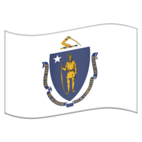
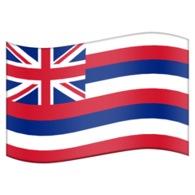

↗ï¸
Four Corners, AZ
⬇ï¸
Nogales, AZ

⬅ï¸
Cape Mendocino, CA

↙ï¸
Four Corners, CO

⬆ï¸
Salisbury, CT
➡️
Voluntown, CT 🏃‍♂️
⬇ï¸
Hawthorne Beach, CT
⬅ï¸
Greenwich, CT

⬆ï¸
East-West Highway, DC
➡️
Eastern & Southern Aves, DC
⬇ï¸
Jones Point Light, DC
⬅ï¸
Andrew Ellicott Park, DC

⬆ï¸
Wilmington, DE
➡️
Fenwick, DE
⬇ï¸
Selbyville, DE (5 km)
⬅ï¸
Delaware Wedge
⏺️
New Castle, DE 12 Mile Circle

➡️
Palm Beach Shores, FL (2 km)

➡️ Kansas City, KS (5 km)
 ⬆ï¸
Seabrook, MA
⬆ï¸
Race Point Cape Cod
➡️
Cape Cod, MA
⬇ï¸
Westport, MA
⬅ï¸
South Egremont, MA

⬆ï¸
Cumberland, MD
➡️
Fenwick, MD
⬇ï¸
Cedar Island, MD
⬅ï¸
Crellin, MD

⬇ï¸
Fort Foster, ME

➡️
New Castle, NH
⬇ï¸
Dracut, NH (10 km)
⬅ï¸
West Chesterfield, NH

⬆ï¸
Montague, NJ
➡️
Palisades, NJ
⬇ï¸
Cape May Point, NJ
⬅ï¸
Pennsville, NJ

↖ï¸
Four Corners, NM

⬆ï¸
Riverdale New York City
➡️
Montauk, NY
➡️
Floral Park New York City
⬇ï¸
Tottenville, NY
⬅ï¸
Shore Parkway New York City

↖ï¸
Fort Stevens, OR

➡️
Matamoras, PA
⬇ï¸
Hanover, PA (5 km)

⬆ï¸
Cumberland, RI
➡️
Little Compton, RI
⬇ï¸
Watch Hill Point, RI
⬅ï¸
Napatree Point, RI

↘ï¸
Four Corners, UT

⬆ï¸
Cross Junction, VA
➡️
Assateague, VA
⬇ï¸
Cape Charles Delmarva

⬇ï¸
Vernon, VT

↙ï¸
Cape Disappointment, WA

➡️
Harpers Ferry, WV
🇦🇸 ⬇ï¸
Rose Atoll US territory
🇦🇷 ⬇ï¸
Tierra del Fuego
🇦🇶 ⬇ï¸
South Pole Earth
🇦🇺 ⬆️ Cape York
🇦🇺 ➡️ Cape Byron
🇦🇺 ⬇️ South East Cape
🇦🇺 ⬇️ Wilsons Promontory
mainland
🇦🇺 ⬅️ Dirk Hartog Island
🇦🇹 ⬇ï¸
Eisenkappel-Vellach
🇦🇹 ⬅ï¸
Feldkirch
🇧🇦 ⬇ï¸
Trebinje
🇧🇷 ➡️ João Pessoa
South America
🇨🇦 ⬇ï¸
Point Pelee
🇨🇻 ⬅ï¸
Santo Antão Africa 🏝 (25 km)
🗿 ⬅ï¸
Easter Island Oceania
🇨🇱 ⬇ï¸
Cape Froward
🇨🇳 ⬇ï¸
Sanya
ğŸ‡ğŸ‡· ⬆ï¸
Sveti Martin na Muri
ğŸ‡ğŸ‡· ➡️
Ilok
ğŸ‡ğŸ‡· ⬇ï¸
Cape Oštra
ğŸ‡ğŸ‡· ⬅ï¸
Bašanija
🇨🇴 ⬆️ Punta Gallinas
South America
🇨🇴 ➡️
GuainÃa
🇨🇴 ⬇ï¸
Leticia
🇨🇴 ⬅ï¸
Cabo Manglares
🇨🇾 ➡️
Cape Greco European Union
🇨🇿 ➡️
Bukovec
🇪🇬 ⬇ï¸
Bir Tawil unclaimed
🇪🇬 ⬇ï¸
Sharm El Sheikh Sinai
🇪🇪 ⬆ï¸
Cape Purekkari
🇪🇪 ⬇ï¸
Karisöödi
🇪🇪 ⬅ï¸
Cape Ramsi
🇫🇮 ⬆ï¸
Nuorgam European Union
🇫🇮 ⬅ï¸
Kolmen valtakunnan rajapyykki
🇫🇷 ⬇ï¸
Puig de Coma Negra
🇫🇷 ⬅ï¸
Pointe de Corsen
🇩🇪 ⬆ï¸
Mövenberg
🇩🇪 ⬇ï¸
Oberstdorf
🇬🇮 ⬇ï¸
Europa Point
🇬🇺 ⬅ï¸
Point Udall US territory
ğŸ‡ğŸ‡º ⬆ï¸
Hidvégardó (40 km)
ğŸ‡ğŸ‡º ➡️
Garbolc (15 km)
ğŸ‡ğŸ‡º ⬇ï¸
Kásád
ğŸ‡ğŸ‡º ⬅ï¸
Felsőszölnök
🇮🇩 ⬇ï¸
Panama Island Asia 🏝
🇮🇱 ⬇ï¸
Eilat town
🇮🇱 ⬅ï¸
Kerem Shalom
🇮🇹 ⬆ï¸
Testa Gemella Occidentale
🇮🇹 ➡️
Capo d’Otranto
🇮🇹 ⬇ï¸
Punta Pesce Spada
🇮🇹 ⬅ï¸
Rocca Bernauda
🇱🇻 ⬆ï¸
Ipiķi
🇱🇻 ➡️
Pasiene
🇱🇻 ⬇ï¸
Demene
🇱🇻 ⬅ï¸
Cape Bernāti
🇱🇮 ⬆ï¸
Ruggell
🇱🇮 ⬅ï¸
Balzers
🇱🇹 ⬆ï¸
Lemkinė
🇱🇹 ➡️
Vosiūnai
🇱🇹 ⬇ï¸
Musteika
🇱🇹 ⬅ï¸
Nida
🇲🇾 ⬇ï¸
Tanjung Piai Asia
🇲🇪 ⬅ï¸
Herceg Novi
🇳🇱 ⬆ï¸
Rottumerplaat
🇳🇱 ➡️
Bad Nieuweschans
🇳🇿 ⬆️ North Cape
🇳🇿 ⬆️ Cape Farewell
South Island
🇳🇿 ➡️ East Cape
🇳🇿 ➡️ Cape Koamaru
South Island
🇳🇿 ⬇️ South West Cape
🇳🇿 ⬇ï¸
Slope Point South Island
🇳🇿 ⬇️ Cape Palliser
North Island
🇳🇿 ⬅️ West Cape
🇳🇿 ⬅️ Cape Maria van Diemen
North Island
🇳🇴 ⬆ï¸
Cape Nordkinn Europe
🇳🇴 ⬆ï¸
Longyearbyen city on Earth
🇵🇪 ⬅️ Punta Pariñas
South America
🇵🇱 ⬆ï¸
Jastrzębia Góra
🇵🇱 ➡️
Osinów Dolny
🇵🇱 ⬇ï¸
Wołosate (40 km)
🇵🇱 ⬅ï¸
Zosin
🇵🇹 ⬅ï¸
Cabo da Roca Europe
🇷🇺 ⬆ï¸
Cape Chelyushkin Asia
🇷🇺 ⬆ï¸
Cape Fligely 🏝
🇷🇺 ➡️
Big Diomede Asia 🏝
🇷🇺 ➡️
Cape Dezhnyov Asia
🇷🇺 ⬅ï¸
Vistula Split
🇷🇺 ⬅ï¸
Lavry Contiguous
🇷🇸 ⬆ï¸
Subotica (30 km)
🇸🇮 ⬆ï¸
Budinci
🇸🇮 ➡️
Lendava
🇹🇬 ⬆ï¸
Cinkassé
🇹🇬 ⬅ï¸
Cinkassé
🇸🇴 ➡️
Ras Hafun Africa
🇿🇦 ⬇ï¸
Cape Agulhas Africa
🇪🇸 ⬆ï¸
Punta de Estaca de Bares
🇪🇸 ➡️
Cap de Creus
🇪🇸 ⬇ï¸
Punta de Tarifa Europe
🇪🇸 ⬅ï¸
Faro de Punta Orchilla
🇸🇪 ⬆ï¸
Treriksröset
🇨🇠⬆ï¸
Bargen
🇨🇠â¡ï¸
Piz Chavalatsch
🇨🇠⬇ï¸
Pedrinate
🇨🇠⬅ï¸
Chancy
🇹🇳 ⬆ï¸
Ras ben Sakka Africa
🇹🇷 ⬅ï¸
Cape Baba Asia
🇬🇧 ⬆ï¸
Dunnet Head Great Britain
🇬🇧 ⬅ï¸
Land’s End England
🇺🇸 ⬆ï¸
Northwest Angle contiguous
🇺🇸 ⬆ï¸
Point Barrow
🇺🇸 ⬇ï¸
Cape Sable mainland
🇺🇸 ⬇ï¸
Key West contiguous
🇺🇸 ⏺️
Lebanon contiguous
🇺🇾 ⬇ï¸
Punda del Este
🇻🇮 ➡️
Point Udall US territory
🇪🇠⬇ï¸
Ras Nouadhibou
➡️ Hickman, AR
⬇ï¸
Imperial Beach, CA
⬅ï¸
Perdido River, FL
 ⬇ï¸
Ka Lae, HI

⬇️ Cairo, IL

⬅ï¸
Kentucky Bend, KY

➡️ Venice, LA

➡️ Rockwood, MO
⬇️ Cardwell, MO

⬅️ Natchez, MS

⬇ï¸
Cape Fear, NC
⬆ï¸
Pittsburg, NH

⬇ï¸
Laughlin, NV
⬆ï¸
Thousand Islands, NY
⬅ï¸
Mina, NY
⬅ï¸
Cape Blanco, OR
⬆ï¸
Erie, PA
⬅ï¸
New Freport, PA

➡️
Bird Island, SC

⬆️ Dover, TN
⬅ï¸
Memphis, TN (15 km)

⬇ï¸
Brownsville, TX
⬇ï¸
Danville, VA
⬅ï¸
Cumberland Gap, VA
⬆ï¸
Berkshire, VT
➡️
Beecher Falls, VT
⬅ï¸
Bridport, VT